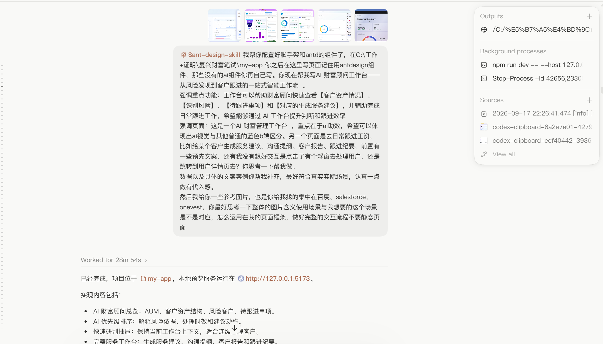
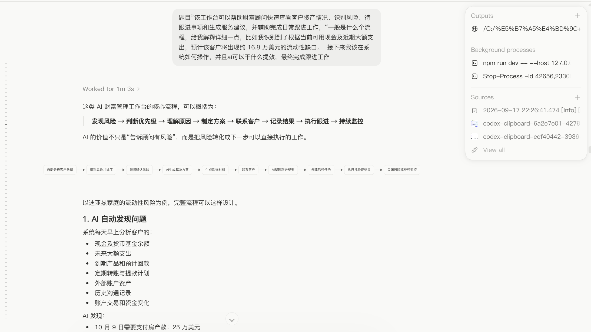
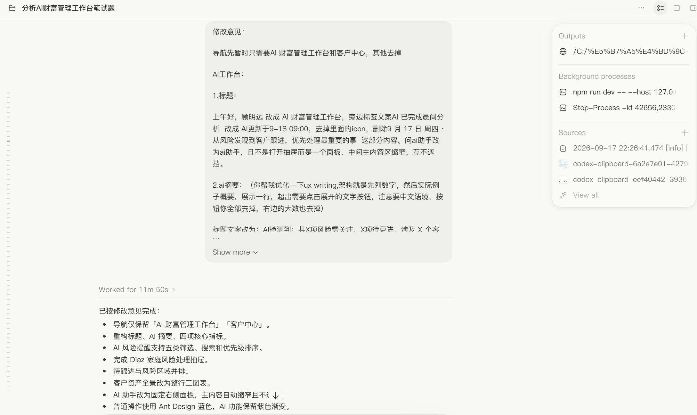

ChatGPT
研究与推演- 拆解题目中的角色、目标、信息与业务闭环。
- 协助调研 Salesforce Financial Services Cloud、OneVest、百度相关智能财富产品等参考案例。

采用 AI 给出的“总览—风险—行动—服务建议”整体框架，并用 React + Ant Design 快速生成可点击原型；参考竞品中的资产分布、任务清单和侧边协作区，建立第一版信息骨架。
参考图只用于提取结构，没有照搬视觉和产品逻辑。将普通 B 端操作保留为 Ant Design 蓝色，AI 内容单独使用紫色；同时把数据、客户与服务情境改成中国财富管理语境。

采用 AI 梳理的完整服务闭环：自动识别与排序风险，顾问核实风险，AI 生成方案和沟通材料，联系客户后保存纪要、建立后续任务并持续监测。
将长流程拆到不同交互层级：风险抽屉只负责解释和快速分诊，客户详情承载完整资产上下文，AI 服务侧栏负责方案推进。AI 不自动执行交易，关键事实和最终选择均由顾问确认。

采用 AI 对修改意见的结构化落实：精简一级导航，重构 AI 摘要和四项核心指标，建立风险分类、优先级和金额影响，并补齐风险抽屉、推荐行动与客户资产全景。
经过实际浏览后，将风险表格改为更适合连续扫描的列表；继续统一中文姓名、人民币和本土服务文案，并把后续服务流程收敛为“确定方向—生成方案—保存纪要”三步侧栏。
| 工作阶段 | 原有摩擦 | AI 提效方式 | 顾问控制点 |
|---|---|---|---|
| 发现 | 依赖人工逐户查看，容易遗漏跨账户信号。 | 持续扫描资产、现金流、目标与互动记录，聚合为风险事件。 | 确认数据范围与风险是否成立。 |
| 判断 | 风险数量多，缺少统一排序依据。 | 同时给出影响金额、时间窗口、风险来源与 AI 优先级。 | 决定立即处理、稍后跟进或忽略。 |
| 准备 | 需要手工整理客户全量信息并拟定多个方案。 | 结合资产结构生成可比较的服务方向和待确认问题。 | 选择方向、调整沟通重点与表达口径。 |
| 沟通 | 话术与材料重复准备，质量依赖个人经验。 | 生成沟通文案、材料清单和客户适配的说明。 | 复核内容并选择合适渠道发起联系。 |
| 留痕 | 沟通结束后容易漏记结果和后续日期。 | 结构化记录沟通结果，更新风险状态并建立下次跟进。 | 确认纪要准确后保存。 |